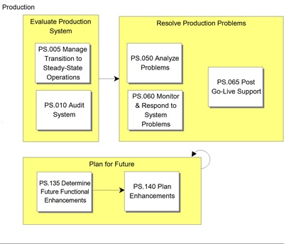

OUM |
Process Overview |
||
Method Navigation |
Current Page Navigation |
||
|
|
||||||||
The goal of the Operations and Support process is to monitor and respond to system problems via a help desk, to upgrade the application to fix errors and performance problems, to evaluate the System in Production, and to plan enhancements for increased functionality, improved performance and tighter security.
The development project does not come to an abrupt end when the team installs the application system into Production. In fact, the months following that milestone can determine the real success or failure of the project. Internal auditors have not yet produced the System Evaluation, and users most likely still have a few problems to uncover. There are certain to be requirements with lower priorities that have not been implemented. The Could Have requirements and any remaining Should Haves can now be reprioritized into a Future MoSCoW List (Enhancement Plan), from which upgrades can be defined.
 This process overview is written from the perspective of a Full Method View, utilizing ALL of the activities and tasks in this process. Therefore, all of the following sections provide comprehensive information. If your project is utilizing a tailored approach (for example, Technology Full Lifecycle View, Application Implementation View, Middleware Architecture View), not everything in this overview may be appropriate for your project. Please keep this in mind, especially when reviewing the Key Work Products and Tasks and Work Products sections. You should use OUM as a guideline for performing all types of information technology projects, but keep in mind that every project is different and that you need to adjust project activities according to each situation. Do not hesitate to add, remove, or rearrange tasks, but be sure to reflect these changes in your estimates and risk management planning. You should also consider the depth to which you address and complete each task based on the characteristics of your particular project or project increment. See Oracle's Full Lifecycle Method for Deploying Oracle-Based Business Solutions for further information on the scalability and adaptability of OUM.
This process overview is written from the perspective of a Full Method View, utilizing ALL of the activities and tasks in this process. Therefore, all of the following sections provide comprehensive information. If your project is utilizing a tailored approach (for example, Technology Full Lifecycle View, Application Implementation View, Middleware Architecture View), not everything in this overview may be appropriate for your project. Please keep this in mind, especially when reviewing the Key Work Products and Tasks and Work Products sections. You should use OUM as a guideline for performing all types of information technology projects, but keep in mind that every project is different and that you need to adjust project activities according to each situation. Do not hesitate to add, remove, or rearrange tasks, but be sure to reflect these changes in your estimates and risk management planning. You should also consider the depth to which you address and complete each task based on the characteristics of your particular project or project increment. See Oracle's Full Lifecycle Method for Deploying Oracle-Based Business Solutions for further information on the scalability and adaptability of OUM.
This process flow for this process follows:

Depending on your project (for example, large, complex, etc.), the project manager may designate an Operations and Support team leader. If the project manager designates an Operations and Support team leader, they are responsible for leading the Operations and Support process and reviewing the work products. The team leader plans, directs, and monitors the day-to-day work of the team. The team leader assigns work packages to the team members and makes sure they understand the requirements. The team leader is responsible for building team cohesion, motivating the teams, and providing assistance and encouragement to the team members. Each team leader performs the final quality control and quality assurance for the team by reviewing all work products. The team leader also signs off on team work completion and quality. Work that is not up to quality standards is returned. Team leaders review work products from other teams when these work products may impact aspects of the system. The team leader reports the team's progress to the project manager. Refer to Project Management in OUM for additional information on team leaders.
The contracts for most development projects specify a required warranty period. This is the length of time following system acceptance that the project team is obliged to address problems and fix any faults that are found. A typical warranty period is ninety days. The specified warranty period usually determines the character of the Operations and Support process. A short or absent warranty period means a very short time to hand over the crucial jobs of application support and maintenance. A longer warranty period allows a more gradual handoff.
Some customers require an audit of the system (PS.010). During the audit, the success of the application system development project is measured against the original goals set out in the Quality Plan. This audit usually includes validation of the system against non-functional requirements. Increasingly, such audits focus on security issues, such as the prevention of unauthorized access to data. Therefore, it is important to address such issues and to involve the internal auditors in the Technical Architecture process. Audits should be repeated as the system is upgraded.
Some of the tasks in the Operations and Support process (PS.050-PS.060) involve evaluating the system's performance in relation to the performance requirements documented in the Technical Architecture process. If the product team has not built hooks into the application to capture exact response times and transaction frequencies, these tasks require gathering subjective feedback from the users.
In the period after the system has gone into Production, it is often necessary with a number of small fixes or patches to upgrade the application. However, there might be larger functional areas that should be added to the System in Production, and there are certain requirements with lower priorities that have not been implemented. The Could Have requirements and any remaining Should Haves can now be reviewed again, together with any new requirements, to determine any future enhancements (PS.135) and be reprioritized into a Future MoSCoW List (PS.140) from which larger upgrades or even new projects can be defined.
The tasks and work products for this process are as follows:
| ID | Task | Work Product |
|---|---|---|
Production Phase |
||
PS.005 |
Manage Transition to Steady-State Oerations | Steady-State Operations |
PS.010 |
Audit System | System Evaluation |
PS.050 |
Analyze Problems | Fault Corrections |
PS.060 |
Monitor and Respond To System Problems | Problem Log |
PS.065 |
Post Go-Live Support | Post Go-Live Support |
PS.135 |
Determine Future Functional Enhancements | Future Functional Enhancements |
PS.140 |
Plan Enhancements | Future MoSCoW List |
The objectives of the Operations and Support process are:
Refer to Key Work Products for a complete list of key work products in OUM.
The following roles are required to perform the tasks within this process:
| Role ID | Name | Responsibility |
|---|---|---|
Implementing Organization |
||
| AU | Internal Auditor | Audit financial and business controls and system security. |
| DBA | Database Administrator | Upgrade the production database, if necessary, by applying the upgraded DDL and database procedures. |
| DV | Developer | Analyze open problem reports. Determine faults. Specify fault corrections. Periodically, review list of fault corrections to ensure that they are within the scope of the application system. Provide support for model integration tests by reconciling differences between design specifications and built application. Represent the project team. |
| IQA | Independent Quality Auditor | Evaluate application system. |
| SAD | System Administrator | Provide any requested information to auditor. Provide access to all audit materials. |
| SAN | System Analyst | Analyze performance statistics with the user management to determine the Performance Exceptions. Present and discuss performance statistics with the user management to determine the Performance Exceptions. Compile and prepare list of enhancement requests. Interview users and user management. Determine effort necessary to implement each set of enhancements. Work with business management to assign priorities, present alternatives and develop the proposal including the work and financial plans. |
Customer (User) |
||
| KEY | Ambassador User | Check that the upgrade has adequately addressed each of the agreed Fault Corrections and Performance Corrections. |
| CPM | Customer Project Manager | Arrange and review audit. Review performance statistics and determine Performance Exceptions. Provide enhancement priorities, and review and approve proposal including the work and financial plans. |
| CPS | Customer Project Sponsor | Arrange audit. Provide access to application system users and administrators. Provide enhancement priorities. Review alternatives and approve proposal. |
| SS | IS Support Staff | Provide technical support. |
| USR | User | Provide any requested information to auditor. Provide feedback on perceived application performance. Relate details of problem reports to analyst. |
The critical success factors of this process are:

Copyright © 2006, 2016, Oracle and/or its affiliates. All rights reserved.